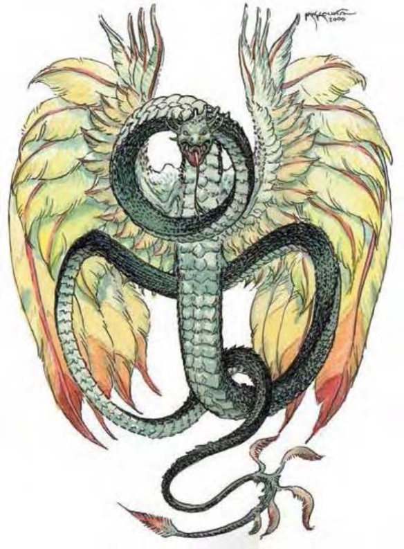

| 生命骰： | 9d8+18（58hp） |
| 先攻： | +7 |
| 速度： | 20英尺（4格），飞行60英尺（良好） |
| 防御等级： | 21（-1体质，+3敏捷，+9天生），接触12，措手不及18 |
| 基本攻击/擒抱： | +9/+17 |
| 攻击： | 啮咬+12近战（1d3+6外加毒素） |
| 全力攻击： | 啮咬+12近战（1d3+6外加毒素） |
| 占据/触及： | 10英尺/5英尺 |
| 特殊攻击： | 紧勒2d8+6，精通攫抓，毒素，心灵异能，法术 |
| 特殊能力： | 改变外形、黑暗视觉60尺，幻化灵体，心灵感应90英尺 |
| 豁免： | 强韧+8，反射+9，意志+10 |
| 属性： | 力量18，敏捷16，体质14，智力17，感知19，魅力17 |
| 技能： | 专注+14，交涉+17，跳跃+0，知识（任意两项）+15，聆听+16，搜索+15，察言观色+16，法术辨识+15（面对卷轴时+17），侦查+16，生存+4（追踪时+6），翻滚+15，使用魔法装置+15（使用卷轴时+17） |
| 专长： | 闪避，法术强效，施法免材B，盘旋，精通先攻 |
| 区域： | 温带森林 |
| 组织： | 单独，成双或成群飞翔（3-6） |
| 挑战等级： | 10 |
| 宝物： | 标准 |
| 阵营： | 总是守序善良 |
| 进化： | 10-13HD（大型）；14-24HD（超大型） |
| 等级调整： | +7 |
这条长有虹彩羽翼的巨蛇显得自信且强大，并对周遭事物了如指掌。
羽蛇因其纯粹的美丽、广大的魔法力量与坚定不移的美德而闻名。它的智慧与善良使其常常在其栖居之地成为被崇敬的对象。
羽蛇大约有12尺长，翼展约有15尺。重约1,800磅羽蛇能说天界语，通用语和龙语，还拥有心灵感应能力（见下文）。
战斗羽蛇很少会在未受挑衅的时候主动发起攻击，尽管它总是会攻击那些受人当场抓获的恶人。羽蛇会对任何它怀疑的生物使用侦测思想能力。它们拥有很高的智力，在敌人接近之前先在远距离使用魔法。如果一个以上的羽蛇参与作战，战斗之前他们会商讨战略。
改变外形Change Shape（Su）：羽蛇可以变成任何小型或中型类人生物的外形。
紧勒Constrict（Ex）：羽蛇可以通过一次成功的擒抱检定造成2d8+6伤害。
精通攫抓Improved Grab（Ex）：如需使用这一能力，羽蛇必须用啮咬攻击成功命中一名体型大于其两级以内的生物。随后，它可以尝试以一个自由动作发动擒抱，这一动作不会引发借机攻击。如果它从擒抱检定中胜出，它将就此建立控制并可以发动紧勒。
毒素Poison（Ex）：伤口型，强韧DC16，初始伤害2d4力量，后续伤害4d4力量。此项豁免DC基于体质。
心灵异能Psionics（Sp）：随意施展――侦测混乱，侦测邪恶，侦测善良，侦测守序，侦测思想（DC15），隐形术，异界传送（DC20），变形术（只对自己有效）。有效施法者等级9。此项豁免DC基于魅力。
法术：羽蛇可以如同9级术士一样施展法术。它可以从术士，牧师以及空气，善良，守序领域的法术列表中选择已知法术。牧师法术和领域法术对于羽蛇相当于奥术，这意味着羽蛇可以不依靠法器来施展它们。
典型已知法术（6/7/7/7/4；豁免DC13+法术等级）：
0-治疗微伤，晕眩术，打击死灵，光亮术，隐雾术，冷冻射线，阅读魔法，提升抗力；
1-忍受环境，法师护甲，防护混乱，克敌机先，风墙术；
2-治疗中度伤，鹰之威仪，灼热射线，沉默术；
3-气化形体，反邪恶法阵，三级怪物召唤术；
4-魅惑怪物，行动自如。
幻化灵体Ethereal Jaunt（Ex）：此能力相当于幻化灵体法术（施法者等级16）。
心灵感应Telepathy（Su）：羽蛇能与90英尺内任何拥有智力属性的生物进行心灵沟通。如果这一生物自愿，则其可以回应羽蛇――而不需要任何共同语言。